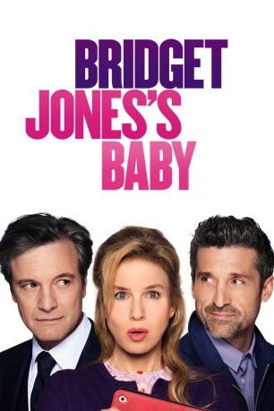

#5204 Bridget Jones' Baby
Auszeichnungen: 1 BAFTA-Awards gewonnen
 gesehen am 04.07.2017
gesehen am 04.07.2017
 
 IMDB-Wertung: 6.7 / 10
IMDB-Wertung: 6.7 / 10  Metascore: 0
Metascore: 0 
43 Jahre und noch - oder schon lange wieder - Single, für Bridget Jones, erfolgreiche Produzentin des Nachrichtenmagazins "Hard News" gibt es anscheinend wichtigere Dinge als die Gründung einer Familie oder Nachwuchs. Doch das soll sich bald ändern, denn um sie herum schwelgt so mancher im Babyglück und der bemüht verborgen gehaltene Geburtstag, der die biologische Uhr problemlos laut stellen kann, wird doch noch breit getreten. Doch dann kommt plötzlich alles zusammen: Bridget begegnet Ex-Lover Mark Darcy und dessen Frau Frau Camilla; dann schleifen ihre Freundinnen Miranda und Cathy Bridget auf ein Mädelswochenende auf einem Musikfestival, wo diese mit Internet-Millionärs Jack Quant im Bett landet. Leider tut sie das auch auch kurz darauf noch mit dem guten Mark - was die Frage nach der Vaterschaft für die kurz darauf diagnostizierte Schwangerschaft verkompliziert...
Jahr: 2016
Dauer: 123 Minuten
FSK:
Land: Irland Studio: StudioCanalTonspuren: DTS - ,
Untertitel: Deutsch,
Auflösung: 1080p (1920x808) Größe: 5795 MB
Genre: Komödie, Liebe
Regisseur:  Sharon Maguire
Sharon Maguire
Drehbuch: Qunshu Gao
Soundtrack:
Darsteller:
 Renée Zellweger als Bridget
Renée Zellweger als Bridget Gemma Jones als Mum
Gemma Jones als Mum Jim Broadbent als Dad
Jim Broadbent als Dad Sally Phillips als Shazzer
Sally Phillips als Shazzer Julian Rhind-Tutt als Fergus
Julian Rhind-Tutt als Fergus Shirley Henderson als Jude
Shirley Henderson als Jude Ben Willbond als Giles
Ben Willbond als Giles Colin Firth als Mark
Colin Firth als Mark- Agni Scott als Camilla
 Katia Elizarova als Glamorous Looking Woman
Katia Elizarova als Glamorous Looking Woman- Tom Rosenthal als Josh - Researcher
- Sarah Solemani als Miranda
 Joanna Scanlan als Cathy - Makeup Lady
Joanna Scanlan als Cathy - Makeup Lady- Neil Pearson als Richard Finch
 Patrick Malahide als George Wilkins
Patrick Malahide als George Wilkins- Kate O'Flynn als Alice
 James Callis als Tom
James Callis als Tom- William Joseph Firth als Dreadlocked Guy
 Patrick Dempsey als Jack
Patrick Dempsey als Jack- Ed Sheeran als Himself
 Adam Leese als Photographer
Adam Leese als Photographer Darren Boyd als Jeremy
Darren Boyd als Jeremy Jessica Hynes als Magda
Jessica Hynes als Magda Dolly Wells als Woney
Dolly Wells als Woney- Joseph Harmon als Milo
 Enzo Cilenti als Gianni
Enzo Cilenti als Gianni Emma Thompson als Dr. Rawlings
Emma Thompson als Dr. Rawlings- Kasia Koleczek als Girl Band Member 2
- Aiste Gramantaite als Girl Band Member 1
- Maria Alexe als Girl Band Member 3
- Souad Faress als Judge
 Nick Mohammed als Ariyaratna
Nick Mohammed als Ariyaratna- Dominic Coleman als Village Hall Photographer
 Celia Imrie als Una
Celia Imrie als Una- Chooye Bay als Studio Guest
 Cathy Murphy als Cashier
Cathy Murphy als Cashier Donald Douglas als Admiral Darcy
Donald Douglas als Admiral Darcy James Faulkner als Uncle Geoffrey
James Faulkner als Uncle Geoffrey- Gbola Adewunmi als Customer having argument with Shopping Attendant , uncredited
- Adele Armas als Shopping lady , uncredited
- Mark Arnold als Anthony Mathis , uncredited
 Lasco Atkins als Passer-by , uncredited
Lasco Atkins als Passer-by , uncredited- Scherrikar Bell als Night Receptionist , uncredited
- Rosy Benjamin als VT Editor , uncredited
 Annarie Boor als Pussy Riot Supporter , uncredited
Annarie Boor als Pussy Riot Supporter , uncredited Jill Buchanan als Match Made Couple at the Festival , uncredited
Jill Buchanan als Match Made Couple at the Festival , uncredited- Chloe de Burgh als Darcy's Friend , uncredited
 Bern Collaco als Businessman / Driver , uncredited
Bern Collaco als Businessman / Driver , uncredited- Vikki Edwards als Protester , uncredited
- Tony Hamilton als VIP Security Guard , uncredited
Datei: X:\3-Trilogie(A-F)\Bridget Jones\Bridget Jones' Baby (2016, FSK, 1920x808).mkv seit 30.12.2016
Festplatte: HD Collection-2(A-Z)-3(A-M)
 Alle Filme aus Gruppe '3-Trilogie(A-F)\Bridget Jones'
Alle Filme aus Gruppe '3-Trilogie(A-F)\Bridget Jones'